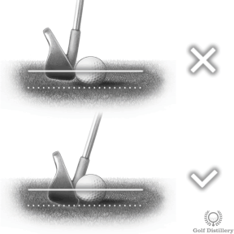

Chipping & Pitching
Swing Length Reference
Throughout this guide, we describe swing lengths by hand position:
- Quarter swing - Hands reach hip/waist height
- Half swing - Hands reach chest height
- Three-quarter swing - Hands reach shoulder height
Pitch Shots (25-90m)

A pitch shot uses a high-lofted club to hit the ball high with a soft landing. It's characterized by high trajectory and quick stopping upon landing on the green.
When to use: Approaching green from 25-90m, obstacles (bunkers, rough, water) between you and green, pin close to your side with limited landing area, need ball to stop quickly, softer greens that allow aggressive approach.
Stance: Narrower than full swing, feet closer together for better feel
Ball Position: Center to slightly back of center
Weight: 60% on front foot at address, maintain throughout
Hands: Slightly ahead of ball for proper shaft lean
Open Stance: Pull front foot back slightly for better visibility and natural out-to-in path
Grip: Choke down 5-5 cm for enhanced control

20-35m (1/4 Swing):
- Lob wedge or sand wedge
- Short backswing (hands to hip height), smooth tempo
- Maximum control and soft landing
35-50m (1/2 Swing):
- Sand wedge or lob wedge
- Half swing (hands to chest) with full acceleration
- High trajectory with quick stop
50-70m (3/4 Swing):
- Gap wedge or 3/4 pitching wedge
- Focus on landing spot, not flag
- Consider wind and green firmness
Key principle: Control distance through backswing length while maintaining consistent tempo and acceleration through impact.
Pick a specific landing spot on the green, NOT the hole itself. This is the most critical mental shift for pitch shot success.
Process:
- Visualize ball trajectory from landing spot to hole
- Account for slope (uphill/downhill/breaking)
- Consider green firmness (soft = land closer, firm = land shorter)
- Aim for spot that leaves margin for error
- Commit fully to landing spot distance, not hole distance
Rule of thumb: On average-speed greens, ball typically rolls 1/3 of carry distance after landing from standard pitch shot.

When to use: Very windy conditions (high trajectory difficult to control), hard ground surfaces (ball bounces and rolls more), when rolling ball to pin provides more control than aerial approach.
Setup adjustments:
- Ball slightly back of center in stance
- Hands forward, creating more shaft lean
- Weight favoring front foot (65/35 split)
- Choose less-lofted club (gap wedge or even pitching wedge)
Execution: Same swing as standard pitch but delofted setup produces lower flight with more roll. Ball lands with less spin and releases toward hole.
Chip Shots

Executed when ball is on grass close to green. Uses high-lofted club to pop ball onto green where it rolls toward hole. Swing motion resembles a putt with loft.
Key characteristics: Minimal air time, maximum roll, simple putting-like stroke, high success rate when executed properly.
When to use: Ball just off green on fairway or first cut, no obstacles between ball and green, plenty of green to work with, firm/fast conditions favor rolling approach.

Narrow Stance: Feet very close together (15-20 cm apart) for stability and feel
Weight Forward: 70-80% on front foot—critical for clean contact
Hands Forward: Well ahead of ball throughout entire stroke
Ball Position: Back of center in stance (near back foot)
Choke Down: Grip down on club significantly for maximum control
Shaft Lean: Visible forward lean creates descending strike
Arms form "Y": Hands, arms, and shaft form letter Y at address—maintain this throughout stroke

Low hop followed by extended rolling—the safest short game shot around the green.
Best conditions:
- No obstacles between ball and green
- Plenty of green to work with
- Green slopes toward hole
- Firm and fast conditions
- Downwind (helps ball roll out)
Execution: Use putting stroke with lofted club. Minimal wrist action, quiet hands, shoulder rocking motion controls distance. Ball pops onto green with one hop then rolls like a putt.

7-Iron or 8-Iron (20% air / 80% roll):
- Land marker at 1/4 to 1/5 of total distance to hole
- Maximum roll with minimal flight
- Safest option when path is completely clear
- Easiest club to control—like a long putt
Pitching Wedge (50% air / 50% roll):
- Land marker at halfway distance to hole
- Balanced flight and roll
- Most versatile option for various green speeds
- Good starting point if unsure which club to use
Sand or Lob Wedge (80% air / 20% roll):
- Land marker at 75-80% of total distance
- More flight with minimal roll
- When you need to carry fringe or small obstacle
- Pin is close to your side of green
Selection strategy: When in doubt, use less loft. Lower-running chips have higher margin for error than high-flying wedge chips.
Quiet Hands: Minimal to zero wrist action—maintain firm wrists like putting stroke
Shoulder Rotation: Rock shoulders to control distance, not hands or wrists
Steady Head: Keep head perfectly still throughout entire motion—watch where ball was
Accelerate Through: Never decelerate into impact—smooth acceleration essential
Low Follow-Through: Keep hands ahead throughout, club stays low to ground
Weight Stays Forward: Never shift weight backward—maintain 70-80% on front foot start to finish
Think "bigger putting stroke": If it helps, imagine you're putting with a lofted club. Same tempo, same stroke, same confidence.
Cause
Leading edge strikes center or top of ball on chip shots, sending ball racing across green due to: (1) trying to help ball up, (2) looking up too early, (3) standing up through impact, or (4) hands falling behind clubhead.
Fix
Step 1: Set up with 70-80% weight on front foot—this is critical for chips.
Step 2: Position ball back in stance and hands well ahead.
Step 3: Keep wrists firm—think "putting motion with lofted club," no wrist hinge.
Step 4: Keep head down until well after impact—see where ball was sitting.
Step 5: Maintain same spine angle from setup through finish—no standing up.
Practice drill: Place coin 5 cm in front of ball. After hitting chip, coin should still be there (you didn't hit ground before ball).
Flop Shots

Hit ball very high over very short distance with minimal roll after landing. This is a high-risk shot—use only when necessary.
Ideal situations:
- Standing near green with bunker or water between ball and pin
- Green speeds are particularly fast (ball won't stop with standard chip)
- Pin is close to your side with very little green to work with
- Need ball to stop almost immediately after landing
- Good lie in fluffy grass (easiest conditions for flop)
When NOT to use: Tight lies (high risk of skulling), into wind (can't control trajectory), cold weather (club bounces unpredictably), when safer alternative exists.

CRITICAL ORDER: Open clubface BEFORE taking grip
- Set club down with face square to target
- Rotate clubface open 20-30 degrees (face points right of target for right-handed golfer)
- NOW take your grip—this prevents face squaring at impact
- Open your stance wide (feet well outside shoulders)
- Position ball forward in stance (off front heel)
- Can move weight slightly back (45/55) for fluffy lies
- Aim body left of target—clubface aims at target
Why this order matters: If you take normal grip THEN open face, your hands will naturally square the face at impact, defeating the purpose.

Full Swing Required: Counter-intuitively, you need significant swing speed to create maximum height over short distance. This is NOT a delicate chip—it's an aggressive motion.
Swing Along Body Line: Do NOT swing at target. Swing along your body alignment (which is left of target). The open face will direct ball toward target.
Slide Clubface Under Ball: Let the loft and bounce do the work. Feel like you're sliding the club under the ball, using the bounce to skim through grass.
Accelerate Aggressively: Commit fully to fast acceleration. Tentative swings lead to disaster (either chunk it or blade it).
High Follow-Through: Complete the swing fully with high finish. Hands should finish above shoulder height.
Mental commitment: This shot requires 100% commitment. Any doubt or deceleration causes failure. If you're not fully committed, choose different shot.

HIGH RISK SHOT - Consider alternatives first:
- Thin contact: Sends ball racing across green (or worse)
- Fat contact: Leaves ball well short, possibly still in trouble
- Requires perfect execution: Small margin for error
- Ask yourself: "Can I bump-and-run around the obstacle instead?"
Best conditions for flop shot success:
- Good to fluffy lie in light rough or fairway grass
- Soft, receptive landing area (green holds shots)
- Warm weather (cold affects club bounce behavior)
- Downwind or no wind (wind makes trajectory unpredictable)
- You've practiced this shot extensively
Worst conditions for flop: Tight lies, hardpan, cold weather, into wind, elevated green (already get height), when nervous or uncommitted.
Special Circumstances

Challenge: Very little grass cushion under ball—high risk of blading if club bounces off hard ground
Smart Strategy: Consider bump-and-run with less-lofted club (8-iron) rather than lofted wedge—much safer option with higher success rate
If Wedge Required - Adjustments:
- Ball position center or slightly back of center
- Hands well ahead at address and maintain through impact
- Weight significantly forward (70/30 split minimum)
- Use pitching wedge (least bounce) rather than sand/lob wedge
- Quiet hands, shoulder rotation—no wrist manipulation
- Descending blow absolutely essential—pick ball clean
- Don't try to take divot—skim turf surface
What to Avoid: High-bounce wedges (sand wedge) that will skip off hard ground into ball causing skull. Avoid trying to help ball up—trust descending strike.

Challenge: Thick grass between clubface and ball eliminates backspin—creates unpredictable "flier" effect where ball comes out hot with minimal spin
Adjustments:
- Open clubface at address to prevent twisting through heavy grass
- Steeper angle of attack to minimize grass contact
- More aggressive swing—grass will slow club significantly
- Firm grip pressure to prevent club twisting at impact
- Consider sand wedge over lob wedge (more mass cuts through grass better)
Expect Different Ball Flight:
- Ball will launch lower than normal
- Significantly less backspin—ball will roll more after landing
- Aim short of target to account for extra roll
- May travel 10-20m farther than expected from same swing
Club Selection: Use one less club than normal distance (example: if you'd normally hit sand wedge, consider gap wedge instead) to account for flier effect.

Challenge: Ball sitting up on top of grass—easy to slide club completely under ball without making solid contact (leads to thin or topped shots)
The Good News: This is actually good lie for certain shots—excellent for flop shot if situation calls for it. Ball sitting up allows you to get under it easily.
Adjustments:
- Can be aggressive with highly lofted clubs (lob wedge works well)
- Focus on hitting ball's equator or slightly below center
- Don't try to dig—let club slide through grass naturally
- Accept that ball will fly with little spin (flier lie)
- May need to use one less club than normal (PW instead of GW)
Expect Different Results:
- Ball will launch easily with high trajectory
- Reduced spin means ball will release more on landing
- Typically travels farther than same swing from fairway
- Aim short and allow for 5-15m extra roll

Challenge: Very long, thick grass wraps around hosel and shaft, causing severe distance loss and unpredictable results. This is penalty-level rough.
Primary Strategy - GET OUT:
- Goal is escape, not perfection—don't be hero
- Advance ball back to fairway or safe area
- Forget about reaching green if lie is terrible
- Accept you'll lose a stroke—minimize total damage
Technical Execution:
- Use sand wedge or gap wedge (blade cuts through better than lob wedge)
- Very steep angle of attack—chop down into grass
- Extremely firm grip—grass will violently twist club
- Short, powerful swing rather than long smooth swing
- Aim well left of target (for right-handers)—grass closes face dramatically
Realistic Expectations: May only advance ball 25-50m even with full effort. Distance control impossible. Direction unpredictable. Sometimes sideways or backward is smartest play.
Mental Approach: This is damage control, not shot-making. Take your medicine, get back in play, move on. Trying for hero shot often leads to double penalty.

Challenge: Rock-hard ground with zero give—club bounces easily off surface into ball causing skulls. No margin for error. One of golf's most intimidating lies.
Safest Strategy (Highly Recommended): Use bump-and-run with 8 or 9-iron rather than wedge. Lower-lofted club with less bounce = much higher success rate.
If Wedge Absolutely Required - Adjustments:
- Use pitching wedge only (least bounce of wedges)—never sand or lob wedge
- Ball position well back in stance (back of center)
- Hands significantly ahead at address
- Weight very forward (80/20 split minimum)
- Extremely steep angle of attack
- Pick ball absolutely clean—don't attempt to take divot
- Think "trap the ball" against hard surface
Expect Different Results:
- Ball will launch with low trajectory
- Significant roll after landing (plan for this)
- Very little spin generation possible
- May need to aim short and use slope/firmness to reach target
What to Absolutely Avoid: Lob wedge or sand wedge from hardpan—excessive bounce will skip club into ball's equator causing skull that races across green. This is recipe for disaster.